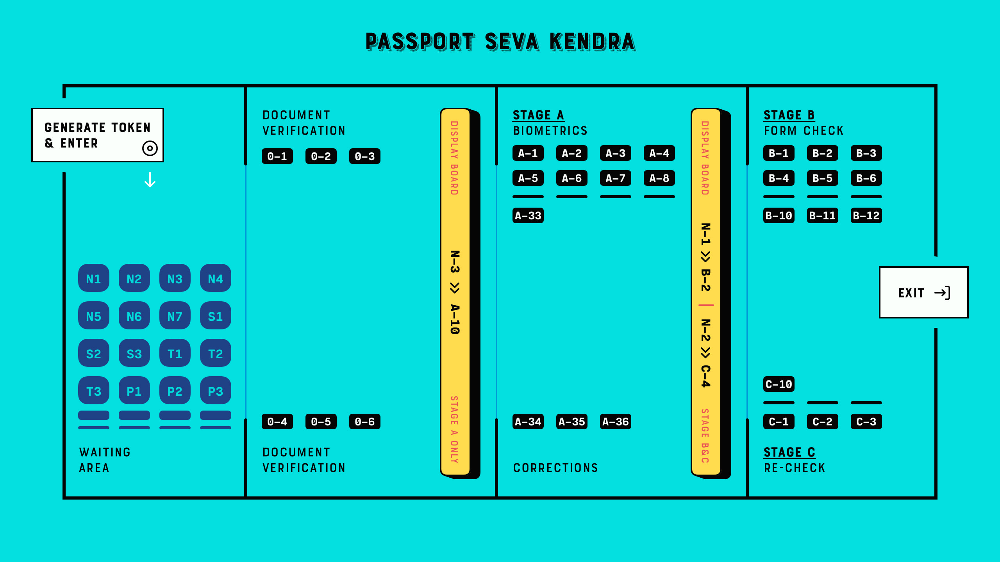

A year ago, I went to the Passport Seva Kendra (PSK) in Mundhwa, Pune to get my passport renewed. At the time, the government had revamped this process and made it a simple, step-in/step-out painless affair. Unfortunately for me, I hit an edge-case in the system and took much longer than expected to complete. I was there for close to 4 hours. I used this time to observe the behavior of the PSK and think about ways to improve the applicant experience. I thought it was an interesting problem to solve and write about.
Recently, my wife booked an appointment at the PSK to renew her passport and this provided the spark I needed to write about it. So here we are, a year later, talking about the passport renewal process at the PSK.
The Problem Statement
Let me describe the process to you first.
- The PSK has appointment slots every 15 minutes, and there are ~25 people in each slot.
- Once you enter the PSK, there are 4 to 6 counters to verify your documents.
- On verification, you are assigned a unique token number. We'll talk about this in a bit.
- Token numbers are displayed on an electronic display-board. The board indicates which counter the person should go to. You are to wait in the waiting area and look at the display. You will soon be scheduled against a counter, where a PSK employee will help you with that particular stage of the process.
- There are 3 stages in the process. The first is 'Biometrics' (Stage A). At this counter, the PSK employee collects your fingerprints and takes your photo. Your online form is updated with this information. There are 36 counters serving this stage (A-1, A-2 ... A-36).
- The second stage is 'Form Check' (Stage B). At this point, the PSK employee checks the details in your form. If he finds any problems, he will redirect you to the Corrections counter. During my visit, counters A-34, A-35 and A-36 were reserved for corrections. After corrections, you have to come back to this stage. There are 12 counters (B-1, B-2 ... B-12).
- The final stage is 'Form Re-Check' (Stage C). At this point, the agent double-checks the work of the previous counters and takes your form. If there are any corrections you have to go back to the corrections counters and start again. Once the form is checked, your reissue request has been processed. You are free to leave the PSK and go home. There are 10 counters (C-1, C-2 ... C-10).
- Coming back to the token numbers. These are of the form N-10, S-4 etc. The alphabet represents the applicant category. These categories are as follows:
- Normal (represented by N): Most people fall into this category.
- Senior (represented by S): For people older than 60
- Tatkal (represented by T): For people who want speedy processing of their passport (and have paid extra for this benefit)
- Requiring Police Clearance (represented by P): People who need clearance from the police (probably because they have criminal records, or work in sensitive departments in the government).
- Categories other than 'Normal' have a higher priority when it comes to processing their applications. For the purposes of this post, I assume that P has the highest priority, followed by S, T and N.

In the rest of this post, we'll build this system as described above, and see if we can fix the flaw in it. We will use Clojure to write the solution. Clojure's concurrency primitives are fantastic, and helped me model this system in an elegant and readable way. As we go along, I'll explain these primitives in brief. Eric Normand has written an excellent guide to understanding concurrency primitives in Clojure, and Rich Hickey has a great talk about this as well. I highly recommend both these resources to the interested reader. The focus of this post will be on using these tools to implement a non-trivial system.
So what is the problem with the system?
First, let's get the flaw out of the way. The problem with this system is that the applicant has no idea when he'll be scheduled with an agent. He must keep staring at the display board. For example, if you are N-30 and stage A took a particularly long time for you, others have moved past you to the next stage (B and beyond). The display board may read that N-41, N-42 etc are at counters B-1, B-2 etc. However, this does not mean that N-30 will show up next. The display board may go all the way to N-60 before N-30 shows up. As there is no certainty about when your number will show up, you have no option but to continuously stare at the board. This gets really irritating after a while.
Here are some ways to deal with this problem:
- Instead of using simple queues between the stages, use a priority queue. This means that even if N-30 took a long time on stage A, and the board had moved on to N-40s and above for stage B, as soon as N-30 is done with stage A he will be moved to the top of the queue for B. In this way, the applicant can look at the board and always tell whether he'll be up next or not.
- Generate new token numbers between each stage. This will give the applicant a clear idea of the number of people ahead of him at any given point in time.
- Provide the person with a new display board, where he can enter his token and see where he is in the queue for his stage.
We will see these in action in our simulation program.
Representing all the information about the PSK
Everything describing the behaviour of the PSK can be captured in code. For our simulation, the data looks like this:
(def stages
"The various stages in the PSK, and transition from one stage to the other.
- `processing-time-range` represents the amount of time spent at the
counter in this stage (in mins).
- `next` represents the next stage for the person.
- `counters` represent the number of counters/agents serving this stage."
;; Actual Values:
;; 4 Doc verification Counters
;; 33 counters for Biometrics
;; 12 for form checking
;; 10 for final checking
;; 3 for corrections
;; Using different values here so that the display board is
;; human-readable.
{::enter {:next ::doc-verification}
::doc-verification {:next ::biometrics
:counters 10
:display-str "0-"
:processing-time-range [1 5]}
::biometrics {:next ::form-check
:counters 4
:display-str "A-"
:processing-time-range [3 15]}
::form-check {:next ::final-check
:counters 3
:display-str "B-"
:processing-time-range [2 4]
:failure ::corrections}
::final-check {:next ::exit
:counters 2
:display-str "C-"
:processing-time-range [2 4]}
::corrections {:next ::form-check
:counters 1
:display-str "D-"
:processing-time-range [5 15]}})
(def waiting-room-capacity 500) ; max number of waiting people
(def total-capacity
"number of people that can be in the PSK at max"
(apply + waiting-room-capacity (keep :counters (vals stages))))
(def processing-batch-size
"no of people entering the center at one time."
25)
(def new-batch-in-mins
"time between one batch and the next"
15)
(def stage-status
"For the given stage, the map of possible states that a person can be
in."
[;; Person is in the waiting area, looking at the display to see
;; when he's called to a counter.
::waiting
;; Counter is assigned to the person
::in-process
;; Person is done with the counter and heading to the next stage.
::done])
We use a simple map - stages - to represent all the stages in the PSK, the number of counters per stage, the amount of time per stage and the next stage after this one. A person is either waiting (looking at the display board), or is at a counter, or is done with a stage (done triggers a move to the next stage). From the point of view of the person, he is either waiting or at a counter.
Letting people into the PSK, and generating token numbers for them.
The first thing we will build is the token generator, and we'll use the most intuitive Clojure concurrency primitive for this: the atom.
Clojure Concurrency Primitive - Atoms
Atoms are useful when reading / writing a single piece of data (potentially across multiple threads). This is the common case for shared resources and atoms are what I've used in most of the concurrency code I've written.
(def token-generator
"Give the next token number to the applicant."
(atom {:normal 0
:senior 0
:tatkal 0
:police-clearance 0}))
;; Use the token generator to get the next token as follows:
(comment
(get (swap! token-generator
update
person-type
inc)
person-type))
;; swap! is a way to atomically change the value held by the atom.
;; This does an internal compare and set operation, and thus the function
;; passed in to manipulate the value - in this case update - may be
;; called multiple times. This function should be free of side effects.
Clojure provides something more powerful - the ref - when you want to deal with multiple pieces of data that change together. We'll see it in action in the following sections.
If we choose some weights to represent the probability of an applicant belonging to a certain category, we can write some code to randomly generate applicants. The relevant code is here. We now have a way to assign increasing token numbers to each new person entering the PSK.
Clojure Concurrency Primitive - Futures
We'll use another Clojure concurrency primitive - a future - to continuously move people into the PSK. A future object invokes the body provided to it in a different thread.
In this case, we are starting an endless loop in a new thread. This code creates some people (representing people entering the PSK), sleeps for a bit, then repeats. We'll use our handy tool - an atom - to control when to stop the loop:
(def working-hours?
"Am I working right now?"
(atom false))
(defn let-people-through
"Send people into the PSK in batches as defined by
`processing-batch-size` and `new-batch-in-mins`. Note that in our
code we use seconds to represent minutes."
[active-applicants done-applicants]
(future
(loop []
(if @working-hours?
(do
;; let new people through
;; <logic goes here> ...
;; then sleep for a while
(Thread/sleep (* 1000 new-batch-in-mins))
;; repeat
(recur))
(ctl/info "[Entry] Working hours are over! Closing Shop! Come back later!")))))
Queuing up people and simulating the work done at every stage
Now that people are coming into the PSK, we need a way to queue them up between stages. We also want to write a simulation for the work done at every counter. As described in the problem statement, the PSK is using simple FIFO queues between each stage. We will use the LinkedBlockingQueue data structure to represent these. This data structure is provided by the battle-tested java.util.concurrent package. Dropping down to Java when needed is a bonus Clojure superpower!
(defn create-kendra-queues
"Given the counter-types / `stages` in the kendra, create the
appropriate queues."
[kendra-stages q-capacity]
(let [queues-we-need (-> kendra-stages
keys
set
;; Remove the stages where no queue of
;; people is needed.
(disj ::enter ::exit))]
(reduce (fn [m s]
(assoc m
s (LinkedBlockingQueue. q-capacity)))
{}
queues-we-need)))
Work at the counter involves the following:
- Pick the next person in the queue.
- Call him to the counter by displaying his token number on the display.
- Process the person, do the work.
- Mark this stage as done. This will move him into the next queue.
We can represent this in code as follows:
(defn process-applicant
"Get a person from the queue. Process this person as per the rules
of the counter."
[psk-agent my-queue notice-board]
(if @working-hours?
(if-let [person (.poll my-queue 1 java.util.concurrent.TimeUnit/SECONDS)]
(let [stage (:type psk-agent)
stage-config (:config psk-agent)]
(call-person-to-counter stage notice-board psk-agent person)
(process-person stage stage-config psk-agent @person)
(mark-processing-as-complete stage notice-board psk-agent person)
(send-off *agent* process-applicant my-queue notice-board)
(assoc psk-agent :last-processed (person-representation @person)))
(do (send-off *agent* process-applicant my-queue notice-board)
psk-agent))
(ctl/info (format "[Agent: %s] Working hours are over! Closing Shop! Come back later!"
(agent-representation psk-agent)))))
As we saw previously, we control the running of the code using the working-hours? atom. We're seeing something new here - the send-off function used with Clojure Agents. Ignore this for the time being, we'll come to an explanation of this after seeing refs and transactions.
Keeping track of people and the display board
The tough part of this project is to keep track of the changes to each person's current state and the display board at every instant. These two views should always be consistent as multiple people are concurrently processed at different stages. Clojure makes this delightfully easy with refs and transactions.
Clojure Concurrency Primitive - Refs (and transactions)
Refs can be thought of as permanent pointers to mutable storage locations. The stored values can be safely changed - all together or none at all - using the functions alter, ref-set and commute within transactions. Clojure implements a Software Transactional Memory system1 and gives us A,C, and I of the famous ACID properties2. (Since it's in-mem there is no Durability). Using these transactions in code will be familiar to anyone with experience of using DB transactions.
In practice, updating values looks like this:
(defn- call-person-to-counter
"Announce that person should come to the processing counter. Takes
`person` and `notice-board` refs, performs a transactional update."
[stage notice-board psk-agent person]
(dosync
(alter person
assoc
:stage stage
:stage-status ::in-process
:psk-agent (agent-representation psk-agent))
(store-stage-change person stage ::in-process)
(alter notice-board
assoc
(person-representation @person)
(agent-representation psk-agent))))
Look Ma, no locks! This is much simpler, in my opinion, than thinking about which lock to take around which piece of data. Let's also check out the store-state-change function in the code above. This is a small data-collection function I wrote to calculate statistics about how much time each person takes in each stage.
(defn- store-stage-change
"For the given `Person` ref, store the change to their stage for later analysis."
([person new-stage new-status]
(store-stage-change person new-stage new-status (ct/now)))
([person new-stage new-status time-instant]
(let [stage-log (->StageHistory new-stage new-status time-instant)]
(dosync
(alter person
update
:stage-history
conj
stage-log)))))
Writing this function is simple: we know we want to modify an existing person, so we wrap it in a transaction. The calling code happens to already be in a transaction, but Clojure will deal with this correctly and collapse all the work into a single transaction. From our point of view, we know that anytime this function is called, it is going to safely and permanently modify the person and store the stage-change in it.
Processing people concurrently across all open counters
The final piece of the puzzle is concurrently processing people on all the available counters. This is straightforward to do against a thread-pool, but Clojure provides another tool we can use: the agent .
Clojure Concurrency Primitive - Agents
Agents are another way to access/change mutable state, but they do this in an asynchronous manner. The functions send and send-off apply actions (functions) to the value held by the agent. The return value of the action becomes the new value of the agent. However, these actions execute in a different thread asynchronously. Clojure also guarantees execution in the order of submission. The value of the agent is inspectable at all times.
In our case, this allows us to represent processing counters as agents. The state of the agent is simply an identifier for it. Under the hood, each agent is spawning a thread from a thread-pool and executing a function. This function pulls the next person from the queue supplied to it, processes him, and sends another action to the current agent. We saw this function already, but let me post it again for clarity:
(defn process-applicant
"Get a person from the queue. Process this person as per the rules
of the counter."
[psk-agent my-queue notice-board]
(if @working-hours?
(if-let [person (.poll my-queue 1 java.util.concurrent.TimeUnit/SECONDS)]
(let [stage (:type psk-agent)
stage-config (:config psk-agent)]
(call-person-to-counter stage notice-board psk-agent person)
(process-person stage stage-config psk-agent @person)
(mark-processing-as-complete stage notice-board psk-agent person)
(send-off *agent* process-applicant my-queue notice-board)
(assoc psk-agent :last-processed (person-representation @person)))
(do (send-off *agent* process-applicant my-queue notice-board)
psk-agent))
(ctl/info (format "[Agent: %s] Working hours are over! Closing Shop! Come back later!"
(agent-representation psk-agent)))))
We create Agents as follows:
(defrecord PSKAgent
[id type config])
(defn- create-agents
"For the given `agent-type`, create the given `num` of agents."
[agent-type stage-config num]
(map (comp agent (fn [i] (PSKAgent. (inc i) agent-type stage-config)))
(range num)))
(defn create-kendra-agents
"Given the `stages` and their config for the kendra, create the
appropriate agents to work these counters."
[kendra-stages]
(let [stages-with-counters (-> kendra-stages
keys
set
;; Remove the stages where no counter
;; of agents is needed.
(disj ::enter ::exit))]
(mapcat (fn [s]
(let [config (get kendra-stages s)]
(create-agents s config (:counters config))))
stages-with-counters)))
Tying everything together - the main function
We tie all the pieces of the code together in our main function start-the-kendra!. The comments explain what each step is doing, for those of you unfamiliar with Clojure syntax.
(defn start-the-kendra!
"Setup our Passport Seva Kendra."
[]
(let [;; Create queues for the various stages, returns a map of
;; stage-name -> queue
stage->queue (create-kendra-queues stages total-capacity)
;; Create all the agents
list-of-agents (create-kendra-agents stages)
;; Create a display board for waiting members
notice-board (ref (sorted-map))
;; Track all the active applicants
active-applicants (ref [])
;; Track all the completed applicants (for debugging /
;; historical data purpose)
done-applicants (ref [])]
(ctl/info "[PSK] Welcome, today is a good day.")
;; For each agent at each counter, start processing!
(doseq [a list-of-agents]
;; Get the stage this agent is working at, and the queue of
;; people for that stage.
(let [s (:type @a)
q (stage->queue s)]
;; Start processing people from the queue concurrently in
;; independent threads.
(send-off a process-applicant q notice-board)))
;; Start a continuous future for applicants to periodically enter
;; the PSK.
(let-people-through active-applicants done-applicants)
;; Start a helper process to move people from one stage to the
;; other.
(move-people-through stages stage->queue active-applicants)
;; Return the data. We'll use this to monitor our system.
[notice-board active-applicants done-applicants]))
We haven't seen the move-people-through helper function used above yet. This is a simple future which regularly sweeps through all the people and moves a person done with one stage to the other.
Originally, I wrote the code such that each agent was aware of an input queue as well as an output queue. The agent understood that he had to pick the next person from the input queue and move that person to the output queue on completion. I refactored that out to show that it is simple to add functions around existing concurrent code which modify existing shared resources. The code for move-people-through looks like this:
(defn move-people-through
"Review all the active applicants and move them into appropriate stages."
[kendra-stages stage->queue active-applicants]
(future
(loop []
(if @working-hours?
(let [people @active-applicants]
(doseq [person (->> people
(group-by (comp :stage-status deref))
::done)]
(if (= ::exit (get-in kendra-stages [(:stage @person) :next]))
(mark-applicant-process-as-complete person)
(when-let [next-stage (get-in kendra-stages
[(:stage @person) :next])]
(move-applicant-to-next-stage stage->queue next-stage person))))
(Thread/sleep guide-people-to-next-stage-ms)
(recur))
(ctl/info "[Guide] Working hours are over! Closing Shop! Come back later!")))))
Both mark-applicant-process-as-complete and move-applicant-to-next-stage are tiny transactional updates to the person:
(defn- mark-applicant-process-as-complete
"Takes a `person` ref object and marks its processing as complete."
[person]
(let [time-instant (ct/now)]
(dosync
(alter person
assoc
:stage ::exit
:exit-time time-instant
:total-time (-> @person
:enter-time
(ct/interval time-instant)
ct/in-seconds))
(store-stage-change person ::exit ::done time-instant))))
(defn- move-applicant-to-next-stage
"Given a `person` ref and the next stage they should go to, move
them to the stage. Does a transactional update."
[stage->queue next-stage person]
(dosync
(alter person
assoc
:stage next-stage
:stage-status ::waiting)
(store-stage-change person next-stage ::waiting))
(.put (stage->queue next-stage) person))
I also added a book-keeping function when letting people into the PSK. This function removes completed applicants from the list of active applicants. This frees up PSK capacity. I also move this data to a different list, because it's fun to go through it and look for interesting insights.
(defn- book-keeping-for-applicants
"Remove all applicants who are completely done from
`active-applicants`. Store them in `done-applicants` for
book-keeping.
*NOTE* : Since this goes through the entire collection, it is slow.
Hence we run it when sending in new batches of people."
[active-applicants done-applicants]
(dosync
(let [[active-people done-people] (reduce (fn [[aa da] p]
(if (and (= (:stage @p) ::exit)
(= (:stage-status @p) ::done))
[aa (conj da p)]
[(conj aa p) da]))
[[] []]
@active-applicants)]
(ref-set active-applicants active-people)
(alter done-applicants into done-people))))
Here we use the ref-set and alter functions to reset the value of active-applicants and modify the value of the done-applicants.
With me so far? Some thoughts
- Clojure's concurrency primitives make it simple for me to think about this problem. I wrote the code like I would write a high-level pseudo description of the problem, and it worked just fine. I think this simplification is a huge benefit when dealing with concurrent code.
- The ability to write and test small bits of concurrent code is a big win. It was simple for me to modify the original code and devise experiments around it.
- We haven't really looked at what this looks like when it's running! Let's do that now!
Can we see the problem?
Let's run this system! We're setting up a small loop to display the board. We're running much fewer counters than the actual PSK. This is in order to make the display board consumable.
Things look good in this loop, the board looks predictable. The problem occurs when someone gets unlucky at one stage, and spends much more time there than the average person. Let's repeat the run by marking someone as unlucky, and by increasing the number of counters processing earlier stages (which matches with reality)
(def unlucky-applicant?
"Introduce a little anarchy!"
(atom #{"N-3" "S-2"}))
(defn- process-person
"Do the work for processing the given person. Takes a `person`
object and not a ref."
[stage stage-config psk-agent person]
(let [processing-time* (get-processing-time-for-stage stage-config)
processing-time (if (@unlucky-applicant? (person-representation person))
;; You will need more time because the gods
;; are against you.
(* 10 processing-time*)
processing-time*)]
(Thread/sleep processing-time)))
Here is what this looks like:
As you can see, there are a number of people ahead of N-3 by the time he's done with stage 0. N-40s are being processed in stage 0 at this point in time. He has no idea where he is in the queue of people, and must keep staring at the display board at all times.
I will speak briefly about the three solutions that we initially proposed.
Solution 1: Use priority queues
Using priority queues between each stage solves the problem of the applicant not knowing when he is next. However, there are two points to think about:
- The priority queue solves the problem within a given category, but not across categories. You know that you are the next N- category person at counter B, but you don't know when that will be because of all the S/T/P category people that will be served first.
- A potential drawback of this may be: if a certain set of applicants are always slow at each stage, then in this model they will bring down the average number of people who will be served by the PSK (since we will prioritize serving them over people who have moved ahead of them).
Making the change to use priority queues in our code is trivial. We go back to java.util.concurrent and swap out our LinkedBlockingQueue in favor of a PriorityBlockingQueue. Now all we have to do is provide a comparator function. The code for this is here We can also generate timing samples across people through repeated runs of the program. This will give us an idea of whether the average processing time is affected by using a Priority Queue or not.
Solution 2: New token numbers per stage
Using new token numbers solves the problem elegantly. This is probably not used because of the logistical difficulty of handing out new tokens to applicants again and again. In the real world, I'm sure that this process may cause confusion if not carefully designed. In our system, we already have a perfectly good way of getting the next token number - our atomic token generator. Implementing this solution is straight-forward and left as an exercise for the reader! (This blog post is already quite lengthy!)
Solution 3: "Where am I?" Estimated Wait Time
Another way the PSK can help the applicants is by providing a separate self-serve display. The applicant enters his token number and gets to see how many people are ahead of him for the given stage. Both LinkedBlockingQueue as well as PriorityBlockingQueue provide a toArray function which returns all the elements of the queue in order.
As we are tracking the time each person takes at each stage, we can also predict the estimated amount of time this person would have to wait. This could be an entire blog-post in itself3.
I leave this as an exercise for the reader :)
Final Thoughts
The complete code for this exercise can be found here. The comment block at the end of the gist explains how to run the program against a Clojure REPL. Note that this is not a trivial simulation of the PSK, I believe that the entire code can be actually used by them with a small set of changes. A list of things that we have not implemented:
- In the real world, we'd need to store each person's information in a DB along the way. Since the in-mem structures are guaranteed to be consistent, this is something we can achieve by periodically reading information about all applicants and committing it to the DB (similar to how
book-keeping-for-applicantsworks). - We haven't implemented the error and corrections flow. Failure to pass a stage can be represented as another state (say
::error). Theprocess-applicantcode will identify success/failure of the stage and set the appropriate state.move-people-throughwould need minor changes to deal with this. I leave this as an exercise for the reader. - In the real world, we'd need to build inputs for a real PSK employee to inform us that processing is done. This is nothing but a loop inside
process-applicantwhich checks the DB to see if the work is done.
I'd love to hear feedback about this post. Is there a better way to implement this? Tell me. Am I missing use-cases of the PSK and implementing a solution to a much simpler problem? Do tell! There may be drawbacks to solutions I've proposed that I cannot see, and there may be valid reasons the system is built the way it is. I'd love to understand the real-world problems that I've missed.
If you're interested in working with Clojure, on problems like Estimated Wait Time, we're hiring! Send us an email at jobs@helpshift.com.
A big thank you to the following people for reviewing initial drafts of this post: Kapil Reddy, Kiran Kulkarni, Mourjo Sen, Suvrat Apte, Dinesh Chhatani.
A big thank you to Bhargava Chowdary for creating the illustration of the PSK.
References
- Eric Normand's post explaining all Clojure Concurrency primitives: https://purelyfunctional.tv/guide/clojure-concurrency/
- Rich Hickey's talk on Clojure Concurrency: https://www.youtube.com/watch?v=nDAfZK8m5_8
- Atoms: https://clojure.org/reference/atoms
- Refs: https://clojure.org/reference/refs
- Futures: https://clojuredocs.org/clojure.core/future
- Agents: https://clojure.org/reference/agents